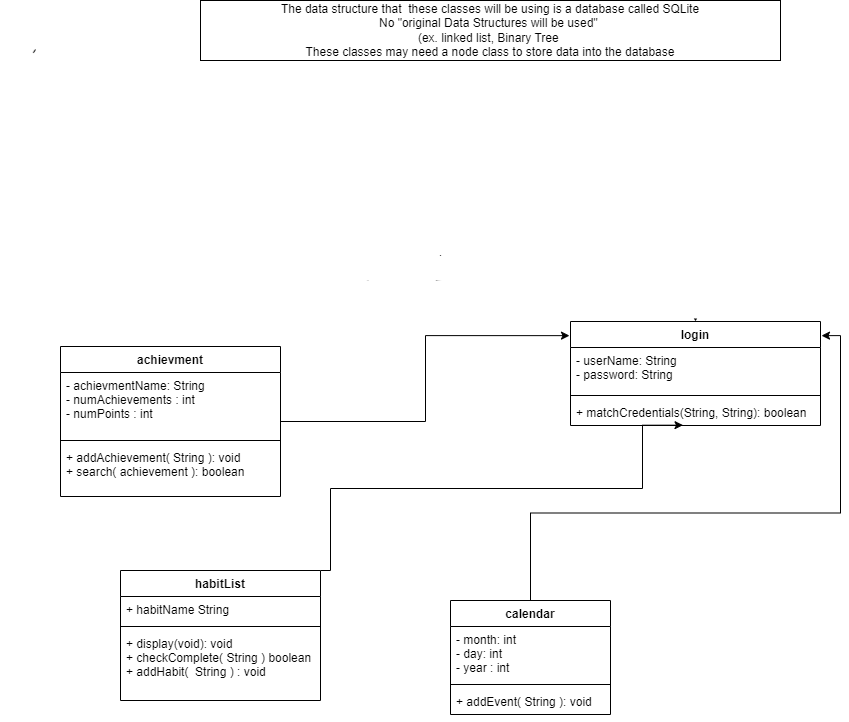

Our habit tracker software will help users create and sustain healthier habits with daily reminders,
positive reinforcement and intuitively recognizing when a goal has been achieved.
Scope of this application is based on its functionality - it will be end-to-end management of the creation
of a habit by allowing users to create, track and manage their milestones. It includes features such as reminders,
streak tracking, chat forums, and virtual rewards and graphical visualization for achievements. It will be built
for individual use.
TBD
-Dart.dev/guides for understanding the dart code used for the user interface .
-Api.flutter.dev for understanding the connections between dart language and flutter framework for user interface.
- https://www.ncbi.nlm.nih.gov/pmc/articles/PMC3505409/ :: Article from NIH on habit formation and health
Our software will a lifestyle application running on Android operating systems.

As shown above, we have several concepts we will need to model. First, the users and how they will interact
with their habits. Users can create habits, do tasks related to habit, and delete habits. Streak counts of
habitsare kept and will inform how well user is keeping up with their habits and what achievements they
receive into their account. Graphs and progress data is shown to user about each habit. Users can chat with
one another about habits.
Ability to login if already registered
Ability to register new user
Ability to change password
Ability to delete account
Ability to look at current habits
Confirm task completed box
Ability to add / delete habits
Ability to set milestones for habit
Awards for each milestone achievement
Graphical representation of task completion
Allows user to plan when task will be completed for day / weeks
Allows user to find other people to talk about shared habits and goals
The people we would like to attract with this app are motivated, goal oriented individuals who want to
create and sustain habits for their own benefit. They are reward motivated and enjoy graphical
representations of their work. We feel this app will be most beneficial for those who wish to have
an extra layer of consistency support.
The current constraints are the security measures we will need to implement in order to keep personal information
private - especially in regards to the chat forum. There are also constraints on the calendar sync due to potential
liability. We also have a limited database of rewards in the first version because we will be pulling images from
open-source code.
Our system will be depending on as much open source code as is available to help us set up our database, chat
forum and UI.
Our largest assumption about the persons using our app is that they are motivated enough to be consistent
after having 'successfully created a habit' to maintain that habit if they decide to no longer track the habit.
Another assumption is based on the notion of how long or often a task must be done before it becomes a habit.
Research shows that it is dependent on the person as well as the habit. Our app will attempt to mitigate the effects
of these assumptions by having micro-goals or milestones set up to track an individual's consistency. Each micro-goal
will be in the service of building a habit through smaller accomplishments instead of only tracking
a person's daily actions.
Our app will be using a mobile UI. It will be implemented using the Flutter framework and Dart programming
language. The interface will run through a menu linking to different pages for each feature of the app.
NF.4.1.1: User
NF.4.1.2: Android mobile device
NF.4.1.3: Flutter framework
NF.4.1.4: Dart
NF.4.1.5: UI APIs
NF.4.1.6: SqLite
Our app will be running on the latest Android os. Any Android mobile device running the latest
2 versions of the Android os will be required to run the app.
NF.4.2.1: Most recent Android os
Packages contained by the Flutter framework and Dart language will dictate what we can do
visually with the design of the app. In addition for any trophy/achievement system implemented
we will be relying on free databases for the trophies or rewards in the app.
This app is not life-critical. Users should expect this app to run quickly and smoothly.
This app will be easy for people to access, update or delete habits and check achievements/progress.
Users shouldn't have to use the app for more than a few minutes a day, just to update their progress.